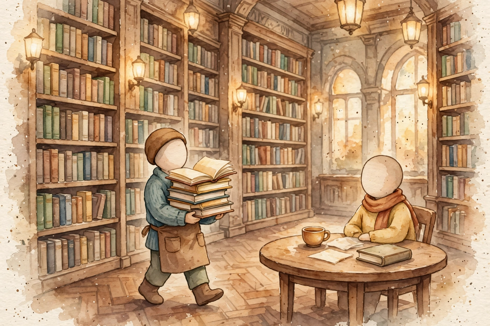
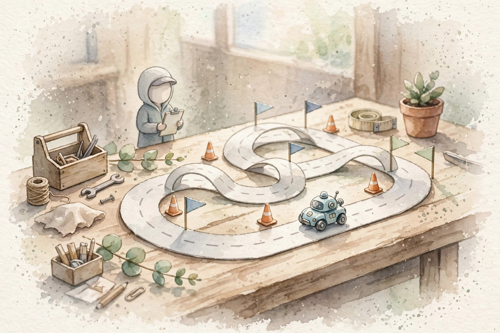
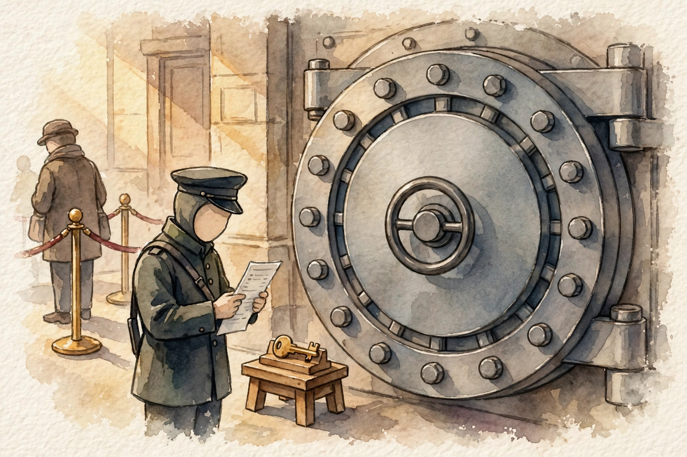

LLM Knowledge Base · Companion
Foundations from zero, a guided path through the RRK agentic AI books in six paths, and two appendixes that build the eval machinery and the security layer for agents.
SOURCE / INTERPRETATION: HOW TO READ THE TAGS
From the lesson SOURCE: the idea, and every number beside it, comes from the cited section of the source. The phrasing is the companion's.
Illustration INTERPRETATION: invented by the companion: an analogy, a toy with made-up values, or a what-if. Never source content.
companion INTERPRETATION: companion voice: the idea above the tag is from the source. The generalization below it is the companion's.

From the lesson 09-agents-rag-guide.html, chapter 0
This volume is a guided reading path through two books the reader owns. The RRK Agentic AI Textbook v2 covers 16 chapters: whiteboard method, system design, agentic design, the FDE playbook, the GCP stack, agents, RAG, chunking, embeddings, eval, guardrails, GPUs and serving and cost, board sessions, and an appendix. The RRK Interview Q&A Bank v2 holds hundreds of questions across discovery, coding, system design, agentic design, RAG, guardrails, production and cost, and behavioral topics.
Part 1 teaches the foundations from zero on this page, in six chapters. Part 2 maps the RRK books in six paths, A to F: agents, RAG, evals, guardrails, the FDE playbook, and the GPU and GCP stack. Each path gives a reading order with master and skim marks, bridge notes to the spine volumes, one worked example, the trap to avoid, and a design-prompt set with real question-bank codes. The budget is two weeks beside the spine, near two hours a day. The chart below shows the study plan for the whole guide.
Study-plan minutes by section
The minutes the study plan assigns to each section of this guide
| Item | Minutes |
|---|---|
| How to use this guide | 3 |
| What an LLM cannot do alone | 2 |
| Retrieval: the simplest answer to stale knowledge | 2 |
| Chunks, embeddings, and vector search | 5 |
| The RAG pipeline, end to end | 3 |
| Where naive RAG breaks | 2 |
| Agents: when retrieval is not enough | 3 |
| Path A: Agents (RRK chapters 3 and 8) | 6 |
| Path B: RAG (RRK chapters 9, 10, 11) | 5 |
| Path C: Evals (RRK chapter 12) | 4 |
| Path D: Guardrails, security, tenancy (RRK chapter 13) | 4 |
| Path E: The FDE playbook (RRK chapter 4) | 4 |
| Path F: GPUs, serving, and the GCP stack (RRK chapters 14 and 5) | 4 |
| What the RRK books do not cover: the forward map | 3 |
| Appendix: schedule, question map, sentence bank | 2 |
| Appendix 9A: Agent Evals | 1 |
| Chapter 1: Task harnesses | 9 |
| Chapter 2: Graders and rubrics | 9 |
| Chapter 3: Judge calibration against humans | 7 |
| Chapter 4: Lucky passes, trajectory checks, and auto-generated evals | 11 |
| Patch 1: Long-horizon evals and drift | 6 |
| Patch 2: Agent CI/CD with eval gates | 7 |
| Appendix 9B: Agent Security | 1 |
| Chapter 1: Capability-level security | 7 |
| Chapter 2: Red-teaming practice | 9 |
| Chapter 3: PII handling in prompts, logs, and training data | 8 |
| Patch 1: MCP server-building mechanics | 7 |
| Patch 2: A2A agent-to-agent patterns | 6 |
| Patch 3: LangGraph-style framework depth | 9 |
Source: study/09-agents-rag-guide.json in the llm-knowledge-base repo. Each value is the minutes field of one section of this guide. The 29 values sum to 149 minutes. The plan adds 1 minute for the intro and 3 minutes for the watch list, 153 minutes in total.
From the lesson 09-agents-rag-guide.html, chapter 1
A language model is a next-token predictor. Training froze the knowledge of the model into the weights on the day training ended. Ask a bare model three kinds of questions and the model fails in three ways. The first failure is stale knowledge: the knowledge cutoff ends the training data, and the model knows zero about later events, or invents an answer. The second failure is no actions: the model writes text only, and a question about an order status lives in a system the model cannot touch. The third failure is no private data: team documents and files never entered the weights.
A hallucination is a confident, fluent answer that is false. Training rewards plausible text, not checked facts, so plausibility fills the gap when facts run out. The context window bounds the fix: question, evidence, and answer must all fit inside one window, so a paste of the whole corpus is no answer at all. The rest of this volume is the fix list for the three limits.
From the lesson 09-agents-rag-guide.html, chapter 2
The simplest fix keeps knowledge outside the model. Keep the facts in documents under your control. At question time, find the relevant pieces and paste the pieces into the prompt. The model answers from fresh text in place of frozen weights. Retrieval is the act of a search for the pieces of a collection that answer a question.
Five words carry the field. A corpus is the collection of documents in the search. A document is one item in the corpus. A query is the question as text. Relevance is the fit between a piece and the question. An index is the data structure that makes the search fast at a million documents. The librarian picture holds: fetch the right pages, hand the pages to the model with the question, and the answer cites the pages, so a human can check the answer. The hard parts hide in the fetch step: cut, measure, search. The next chapter builds that machinery.
From the lesson 09-agents-rag-guide.html, chapter 3
Idea 1: chunks. Documents run long, and the context window is finite. Cut each document into chunks: short passages, one idea per chunk, a few hundred tokens each in the typical setup. Chunks overlap: each chunk repeats a little of the prior chunk, so a fact on a boundary survives the cut. A bad split cuts a fact in half, and no later stage recovers the fact. Small chunks match with precision and lose context. Large chunks keep context and dilute the match. Tune the size with evals, not taste.
Idea 2: embeddings. An embedding is a list of numbers that stands for the meaning of a text. Similar meanings produce similar lists. Cosine similarity measures the angle between two vectors: a small angle means near 1 and similar meaning. The worked example sets A at (1, 0) and B at (0.8, 0.6). The dot product is 0.8, both lengths are 1, and cosine is 0.8. Real embeddings carry hundreds or thousands of dimensions.
Idea 3: vector search. Embed each chunk once and store the vectors. At query time, embed the question and find the nearest chunk vectors. Exact search over a million vectors runs too slow, so production systems use approximate nearest neighbor search, in index shapes such as HNSW and IVF. Top-k names the k highest-score chunks for the prompt. The keyword side covers exact terms that embeddings miss, product codes and error strings: BM25 scores documents by word match with a bonus for rare words. Hybrid search runs vector and keyword search in parallel, merges the lists with reciprocal rank fusion, and hands the top candidates to a reranker. A reranker, often a cross-encoder, reads the query and one chunk together and scores the match with care. The reranker is slow, so the reranker sees the top 50 only, never the million.
From the lesson 09-agents-rag-guide.html, chapter 4
RAG, retrieval-augmented generation, is the full pipeline: the retriever and the machinery, wired to a generator. The pipeline runs on two paths. The index path runs offline, once: documents become chunks, chunks become embeddings, embeddings enter the index. The query path runs online, per question: embed the question, search the index, build the prompt from the question plus the top-k chunks, generate the answer. Index work is expensive and runs once. Query work is cheap and runs per question.
Grounding means each claim in the answer traces to a retrieved passage. A citation names the source chunk, so a human can verify the claim. The worked trace runs a support corpus: 2,000 documents become 24,000 chunks at 400 tokens each with 15 percent overlap. The query embeds in near 5 ms. ANN search over 24,000 vectors returns the top 5 in near 20 ms. The prompt is the question plus 5 passages, near 2,000 tokens. Total added latency over a bare model call: tens of milliseconds plus the longer prompt.
This exact pipeline, fixed-size chunks, one embedding model, plain ANN, no reranker, is the naive baseline. Each advanced RAG technique is a fix to a measured failure of the baseline. Add stages only where evals show the baseline fail. Each stage adds latency, cost, and new failure modes.
From the lesson 09-agents-rag-guide.html, chapter 5
The naive baseline works on demos and breaks in production, in the same four ways in most systems. Missed retrieval: the right page sits in the corpus at rank 47, and the system fails with the answer in reach. Fixes: hybrid search, better chunking, a reranker. Ignored context: the retriever finds the right page and the model answers from memory anyway, against the passage. Faithfulness is the property that the answer stays true to the retrieved passages. Fixes: faithfulness evals and citation rules in the prompt. Split facts: the answer spans a chunk boundary, the chunk failure from the machinery chapter, and no retriever fix exists. Fixes: overlap, semantic chunking, parent-child chunking. Stale index: a document update lands and no rebuild follows, so the system answers from last quarter with full confidence. Fix: a re-index pipeline with a freshness SLO.
Two quiet killers join the four. Context stuffing pastes 50 chunks for safety, drowns the signal in noise, and multiplies cost, because each token bills. Permission leaks hand a private chunk to the wrong user. A filter after retrieval is too late: the retriever may only search what the user may read. The rule under all six: retrieval quality caps answer quality. No prompt trick recovers a fact the retriever never returns.
From the lesson 09-agents-rag-guide.html, chapter 6
RAG answers questions from documents. Real work means action: check the order status in a database, book the flight, run the analysis, verify the result before a reply. Retrieval gives the model knowledge. Retrieval gives the model no hands. An agent is a system that gives a language model hands and the judgment to use them: plan, call tools, read results, repeat until the job is done.
A tool is a function the model may call, with a name, a description, and a schema for the inputs. Function calling is the mechanism: the model outputs a structured call in place of text, your code runs the call, and your code pastes the tool result back into the conversation. The model never touches the database direct. Your code enforces the rules at the tool boundary.
Two loop shapes carry the field. ReAct interleaves reasoning with tool calls: thought, action, observation, repeat. Plan-and-execute plans all steps first, then runs the plan: strong on long tasks, weak when the world surprises the plan. The loop must stop. Four stop conditions guard the run: the answer is ready, a step budget runs out, a time budget runs out, or loop detection fires on a repeat of the same failing tool call. Inside the loop, retrieval becomes one tool among many: the agent retrieves a policy, checks a database, runs code, then verifies a draft against the retrieved passages. Planning breaks a goal into steps before action. Memory is what the agent retains across steps: the conversation history as short-term memory, and notes in a store as long-term memory.
Perceive: the agent reads the goal and the current state. Reason: the agent picks the next step. Act: the agent calls a tool. Observe: the agent reads the tool result, and the loop repeats. Stop: a step budget, a time budget, or loop detection ends the run. The source sets the step budget example at 10 iterations.
From the lesson 09-agents-rag-guide.html, path A
Read RRK chapter 3 first, then chapter 8. Master: the perceive-reason-act loop and the three stop conditions, tool-calling mechanics, ReAct against plan-and-execute, the four memory layers, multi-agent topologies, and context hygiene for the lead agent. Skim: the framework mapping sections. Each framework renames the same ideas, and product names churn.
Bridge notes: what the spine adds. Cost per loop iteration comes from Volume 8: each iteration is a full forward pass over the entire history, so history growth is cost growth. Latency per loop is a TTFT and TPOT budget exercise: 6 steps at 2 seconds is a 12-second feature. KV cache growth comes from Volumes 4 and 8: a 10-step agent with 2,000 tokens of history per step holds far more KV memory than a single chat turn. Planning depth bounds like a KL constraint from Volume 7: keep the policy near what you can verify.
Worked example: price one agent task (illustrative prices). An 8-step support agent averages 1,500 tokens of history per step: 12,000 tokens in total. At an illustrative $3 per million tokens, one task costs $0.036. At one million tasks a day, the loop costs $36,000 a day. The serving levers from Volume 8 move the number: continuous batching raises tokens per second per GPU, int4 weights halve memory cost, a draft model cuts decode passes. More steps make a smarter agent is the trap of the path. Error compounds per step, and verification at each step earns depth.
From the lesson 09-agents-rag-guide.html, path B
Read RRK chapter 9 first, then 10, then 11. Master: the naive baseline and what each advanced stage fixes, agentic RAG with retrieval as a tool inside the Path A loop, GraphRAG and the retrieve-structure idea, chunking trade-offs and the boundary problem, hybrid dense plus BM25 search fused with RRF, and reranking as spend compute where it matters. Skim: the managed-service specifics. Learn what the service does, not the console clicks.
Bridge notes: what the spine adds. ANN quantization is the Volume 8 quantization survey applied to vectors: smaller numbers, cheaper search, same trade-offs. Rerank cost is a batching problem: a cross-encoder scores each candidate with a full forward pass, so 50 candidates cost 50 forward passes. Chunking decisions are tokenization decisions from Volume 4: chunk sizes are token counts, and the embedding model context limit is a hard wall. Context stuffing hits attention dilution: retrieval precision beats a stuffed prompt.
Worked example: a retrieval latency budget (illustrative). Query embedding 5 ms. ANN search over 10 million vectors 20 ms. Fetch of 50 candidates 5 ms. Cross-encoder rerank at 50 times 6 ms equals 300 ms. Prompt build plus TTFT 400 ms. Total near 730 ms, and the reranker owns near 40 percent of the total. The spine instinct: cut rerank candidates to 20 for 120 ms, or distill a cheaper reranker. Measure the budget with fixed queries at p50 and p99, in the Volume 8 pattern.
From the lesson 09-agents-rag-guide.html, path C
Read RRK chapter 12 straight through. The source calls the chapter the best in the book for study return. Master: the one idea that eval is how you stop guessing, RAG metrics, trajectory eval for agents, golden-set construction, judge rubrics and the pitfalls of judges, regression dashboards, CI gates, and the eval-driven iteration loop. The commented eval program in the chapter earns a hand-typed copy.
Bridge notes: what the spine adds. Eval methodology comes from Volume 2: leakage, metric selection, statistical hygiene. Judges and verifiers come from Volume 7: reward models and verifiers are the same idea as a model judge, with the same failure modes, and reward hack is judge game under a second name. Benchmark rigor comes from Volume 8: fix the sampler and the seed, report p50 and p99, warm up. An eval that changes the sampler between runs measures the sampler, not the system.
Worked example: size the golden set honestly (illustrative). Target: detect a 5-point accuracy regression. At 100 golden tasks, the standard error of a 70 percent pass rate is near 4.6 points, and a 5-point drop hides in noise. At 400 tasks, the standard error halves to near 2.3 points, and the regression stands out. Report the set size next to each eval number. Judges carry bias all the same: verbose answers win, the first option wins, the judge grades the judge model family with generosity. Calibrate the judge against human labels, and score the trajectory for agents, because agents fail in the middle.
From the lesson 09-agents-rag-guide.html, path D
Read RRK chapter 13 straight through. Master: the one idea of layers, because each single layer fails, prompt-injection and jailbreak attack classes, PII detection and redaction, pre-retrieval against post-retrieval permission filters, multi-tenant isolation, audit logs, and human approval gates for write actions. The layer stack runs input screen, injection detection, PII redaction, permission filter, human approval, audit trail.
Bridge notes: what the spine adds. Reliability contracts from Volume 10 turn the layers into verifiable promises: each guardrail gets an SLO, a test, and a trace. Agents raise the stakes from Path A: a chatbot worst case is a bad answer, and an agent worst case is a wrong tool call, so write actions sit behind human approval gates.
Worked example: the permission leak, concretely. The safe order runs the permission filter before retrieval, so the retriever only sees documents the user may see, and zero leaks downstream. The leaky order filters after retrieval, and the leak escapes through timing differences, through citations, and through refusal replies that confirm a document exists. A prompt instruction is no security boundary. Architecture enforces policy: filters at retrieval, approval gates before writes, redaction before logs.
From the lesson 09-agents-rag-guide.html, path E
Read RRK chapter 4 straight through. The source calls the chapter the think-like-an-L6 chapter. Master: discovery questions, reliability as SLOs and error budgets, evaluation with golden sets and model judges, the production gap from demo to product, the worked unit economics of the support agent, and the build-against-buy decision frame. Skim: the product-name specifics inside the cloud tool sections, and learn the workshop categories in place of names: compute, messaging, storage, eval, deploy.
Bridge notes: what the spine adds. Unit economics come from Volume 8 and from Volume 10: batching and quantization set the per-token price, and Volume 10 prices the whole system with people and incidents inside. Error budgets become contracts with verification and replay in Volume 10. The evaluate step of the playbook is Paths B and C applied to a customer system.
Worked example: extend RRK's unit economics with spine levers (illustrative). The support agent from Path A costs $0.036 per task at $3 per million tokens. Three spine levers apply. Continuous batching doubles tokens per second per GPU and halves compute cost per token. Int4 weights halve memory. A draft model cuts decode passes near two times. The per-token price falls toward $1 per million, and the task price falls to $0.012. Cost is a design output, not a bill the team reads later. Change the architecture, then re-price. The demo is the product is the trap of the path: a demo sets expectations a production system must keep.
From the lesson 09-agents-rag-guide.html, path F
Read RRK chapter 14 first, then chapter 5. Master in chapter 14: the one idea that cost is a design constraint, the quantization and batching summaries with Volume 8 math behind the claims, the throughput-against-latency knee, and the cost-math worked examples. Master in chapter 5: the portable architecture and the place compute runs, the message and orchestration links, the data landings, the agent stack home, and the two reference architectures, a production RAG agent and a multi-agent system. Skim: single product names and console flows.
Bridge notes: what the spine adds. Volume 8 deepens all of chapter 14, claim by claim. Volume 10 covers the observability and delivery parts of chapter 5: monitoring in one chapter, shadow and canary rollout in a second. The reference architectures are the worked examples that Volume 13 asks the reader to draw on a whiteboard.
The portable reference architecture (reconstructed from RRK ch 5). Read the stack top to bottom as the journey of one request. An API gateway takes auth, rate limits, and tenant routing. An orchestrator runs the agent loop and calls tools. A tool bus serves search, SQL, and internal APIs, each with timeouts. Retrieval runs embed, vector search, rerank. Guardrails run the input screen, PII redaction, and the permission filter. Model serving runs batched, quantized, spec-decoded generation. Observability keeps traces, token and cost meters, and eval scores. A data plane holds sessions, memory, the audit log, and golden sets. Read the stack bottom to top as dependencies: the data plane must exist before the orchestrator earns trust. Product names churn. The boxes stay.
From the lesson 09-agents-rag-guide.html, forward map
Six paths deepen the RRK books. This section names the gaps with honesty: topics a frontier-lab design review demands, with the exact spine volume for each gap. Serving math, paging, disaggregation, and speculative decoding proofs sit in Volume 8. MLOps, CI/CD for models, drift, incident response, and cost engineering sit in Volume 10. Training, pre-training, distributed training, and RL internals sit in Volumes 5, 6, and 7. Research methods sit in Volume 11. The paper spine from Transformer to DPO to MoE sits in Volume 12. ML system design as a whiteboard discipline sits in Volume 13. Behavioral prep for research roles sits in Volume 14 and in the behavioral section of the question bank.
A gap a reader can name is a gap a reader can close. The table in the source is a checklist for the days before a review.
From the lesson 09-agents-rag-guide.html, appendix
Two-week reading schedule (about 2 hours a day). Days 1 to 3: Path A, RRK chapters 3 and 8 plus the cost math of this guide. Days 4 to 6: Path B, chapters 9, 10, and 11 plus the latency budget. Days 7 to 8: Path C, chapter 12 plus a hand-typed copy of the eval program. Day 9: Path D, chapter 13. Days 10 to 11: Path E, chapter 4 plus a re-price of an old design. Days 12 to 13: Path F, chapters 14 and 5 plus a sketch of the portable boxes. Day 14: gaps plus question drills, 20 questions from the bank.
QA Bank to RRK chapter map. Agent internals, codes G1 to G40, map to chapters 3 and 8 and Path A. RAG deep dives map to chapters 9, 10, and 11 and Path B. Security, guardrails, and compliance map to chapter 13 and Path D. Production, cost, and scale map to chapters 14 and 4 and Paths E and F. System design scenarios, codes S1 to S45, map to chapter 5 and Path F. Discovery and scoping, codes D1 to D20, maps to chapter 4 and Path E.
Interview sentence bank (say these out loud). The bank holds one crisp sentence per path and per foundation: the agent use rule, the loop cost rule, the chunk rule, the eval rule, the layers rule, the cost-as-design rule, and the knee rule from Volume 8. Say the sentences aloud until the sentences sound like the reader, not like a book.
From the lesson 09-agents-rag-guide.html, appendix 9A
Path C teaches the one idea: eval is how you stop guessing. This appendix builds the machinery under the idea. Four chapters cover the test rig that runs agents, the graders that score the runs, the calibration that keeps judges honest, and the hunt for lucky passes. Two patches add long-horizon evals and agent CI/CD with eval gates.
From the lesson 09-agents-rag-guide.html, appendix 9A chapter 1
Step 1: the idea in one picture. Picture a driving test. The examiner picks the route, sits in the car, watches each turn, and writes down the events. The examiner is not the student, and the route is the same for each student. A task test rig is the examiner, the route, and the camera in one program: the rig runs an agent against a task and records all events. The rig and the agent are separate programs. That separation is the whole point: swap the model, the prompt, or the tool set, and the comparison stays fair.
Step 2: why you need one. Agents are noisy. One agent on one task, five runs, can give three passes and two fails. A rig makes each experiment reproducible: same task, same tools, same seed, same timeout. The rig blocks the three classic eval lies. The leaked task: the agent saw the answer in training or in a prior run, and the rig resets state per attempt. The helpful environment: a tool returns exactly the answer the agent needs, and the rig uses fixed fixtures and mock services. The silent mutation: run 3 changes a file that run 4 reads, and the rig isolates side effects in a fresh sandbox per attempt. One rule: each eval number names the rig version and the seed.
Step 3: the five parts. Part 1, the task spec: an id, the agent prompt, the start state, and a pointer to the grader, and the agent never sees the grader. Part 2, the environment fixture: a fresh world per attempt, fixture files in a temp directory, a seeded random generator, mock services up, the clock set, teardown after. Part 3, the tool sandbox: tools run inside the rig, never against real systems, and the rig logs each call with arguments and result. Part 4, the execution loop with limits: a step budget, 25 tool calls in the source code, and a wall-clock timeout. Part 5, the trajectory recorder: each step lands in a record, model input, model output, tool call, tool result, time. Graders read the record. Engineers replay the record at debug time.
Worked example: a harness for a file-organizer agent. The task gives the agent a messy directory with 40 files in the full version, and the agent sorts the files into folders by type. The grader checks the final directory tree. The source prints a complete minimal rig in Python: a task dataclass, a step dataclass, sandbox tools that refuse paths outside the work directory, and a stub agent that sorts by file extension. The harness, drawn, shows one-way arrows: task spec to rig, rig to sandbox, sandbox to frozen final state, state to grader. Info flows forward only. Common misunderstanding: the rig is just a test runner. A test runner executes assertions. A rig defines the reality the agent operates in, so two teams with two rigs get two numbers for one agent. Ask for the rig version first at any eval read.

From the lesson 09-agents-rag-guide.html, appendix 9A chapter 2
Step 1: the idea in one picture. The rig runs the agent and records the events. The grader decides the quality of the run. A grader is a function: trajectory plus final state in, score out. Two families split the work. An outcome grader reads the final state only. A trajectory grader reads the recorded steps. Two builders split the work again: rule graders in code with assertions, and model graders as judges with rubrics. Real suites use both.
Step 2: why the grader is the eval. A task with no grader is a demo, not an eval. The grader holds the definition of good, and each definition carries sharp edges. A grader that checks the final answer alone passes an agent that arrives by luck or by a cheat path. Teams optimize toward the grader reward. Reward short trajectories and agents skip verification steps. Write the grader first, then check that the rewarded behavior is the target behavior.
Step 3: the climb from code to judgment. Rung 1: outcome units, small independent checkable units, one fact per unit, pass or fail with a reason. Units stay idempotent: same final state in, same score out, no random draws, no network, no timestamps in assertions. Rung 2: trajectory milestones, scans of the recorded steps for required or forbidden events. Rung 3: rubrics for human or model graders, criteria with a scale and one anchor per level, criteria kept independent. Rung 4 in the source figure: the model judge, calibrated against humans, never ground truth. Graders, drawn, shows the four rungs as a climb from outcome to trajectory to rubrics to judge. A rubric, concretely, names the criterion, the measure, the scale, and the anchors, and anchors do the work: with no anchors, two graders read one rubric and give two scores.
Worked example: a grader for a SQL-writing agent. The agent takes a question in English plus a database schema and returns a SQL query. The grader runs four units in dependency order: valid SQL, read-only statement, no wildcard dump, correct rows. Cheap structural checks run first, and a structural failure stops the run. The good query in the source scores 1.0. A wildcard dump query scores 0.25. Row comparison uses sets of tuples, so row order and column order never matter. Common misunderstanding: the grader is a detail after the agent. The grader is the eval itself, and grader design is agent design.
From the lesson 09-agents-rag-guide.html, appendix 9A chapter 3
Step 1: the idea in one picture. A model judge scores agent outputs. Calibration answers one question: is the judge any good. Take a golden set of outputs with human expert labels. Run the judge on the same outputs. Measure the agreement rate between judge and humans.
Step 2: why you must do it. A judge with no calibration is a guess with extra steps. Agreement with humans is the only ground the judge can stand on, and human-human agreement is the ceiling no judge beats.
Step 3: the calibration loop. Five steps, then repeat on a schedule, because calibration decays as the agent changes. Step 1: build the golden set, 50 to 200 outputs from real runs, with passes, fails, and edge cases in the mix. Step 2: blind double annotation, two human experts label each output alone, with no sight of peer labels or judge labels. Step 3: measure agreement, the raw rate and Cohen kappa, which corrects for chance agreement. The rough guide: above 0.8 strong, 0.6 to 0.8 moderate, below 0.6 weak. Step 4: bucket each disagreement into a taxonomy. Step 5: fix the rubric or the judge prompt, restrict the judge to strong criteria, and re-measure on a fresh sample. Never tune twice on the same golden set.
Worked example: kappa on 50 graded emails. Two humans and one judge label 50 agent-drafted emails as pass or fail. Both say pass on 32. Both say fail on 9. The judge passes 6 that humans fail: the judge leans lenient. The judge fails 3 that humans pass. Observed agreement is 41 over 50, equal to 0.82. Chance agreement from the marginals is 0.604. Kappa is 0.216 over 0.396, near 0.545: weak, below the 0.6 bar. The fix is tighter anchors on partial answers and a re-run on a fresh 50. The calibration loop, drawn, shows the cycle from stratified set to blind labels to kappa to disagreement buckets to a rubric fix. Common misunderstanding: a judge that agrees with the judge self is reliable. Self-consistency is not correctness. Reliability is agreement with humans, blind, on outputs outside the tune set.
From the lesson 09-agents-rag-guide.html, appendix 9A chapter 4
Step 1: the idea in one picture. An agent guesses the right answer for the wrong reason. The grader says pass. The dashboard says the agent is good. The agent is lucky. Lucky passes come in three flavors: a guess from a small answer set, a shortcut through a grader gap, and memorization of a task from training data. Three weapons fight luck, in order: statistics, process evidence, task volume.
Step 2: why one pass means nothing. One pass is one draw from a noisy process. The number carries no rate, and a rate is the unit of any ship decision.
Step 3: the three weapons, simplest first. Weapon 1: statistics, pass-at-k done right. At n tries with c true successes, pass-at-k is 1 minus the chance that a random handful of k tries holds zero successes. Weapon 1b: pass-to-the-k, the consistency check, the chance that k draws all succeed. Weapon 2: process evidence. Trajectory checks, concretely, assert necessary steps in the recorded run, with order and gaps allowed: the balance tool call lands before the transfer call, with other steps free in between. Exact-sequence asserts punish careful agents that add verification steps. Weapon 3: task volume. Auto-generated evals, drawn in the source as a generator pipeline, produce fresh tasks at scale, because hand-written tasks are expensive and leak into training data over time.
Worked example: pass@k from raw trial data. One agent takes n = 10 tries at one task and succeeds c = 3 times. Pass-at-1 is 3 over 10, equal to 0.30: the typical run. Pass-at-5 is 1 minus 21 over 252, equal to 0.9167: the ceiling with 5 tries. Pass-to-the-2 is 3 over 45, equal to 0.0667: two clean runs in a row, under 7 percent. One agent, three numbers, three stories. Report all three, or the eval is a highlight reel. Common misunderstanding: a high pass-at-k means a good agent. The ceiling is not the typical run, and consistency is the number production feels.
From the lesson 09-agents-rag-guide.html, appendix 9A patch 1
Step 1: the idea in one picture. A short task is 5 steps. A long-horizon task is 50 or 500 steps: migrate a codebase, reconcile a quarter of expenses, research a market. Three failures grow with length. Context rot: old tool outputs fill the context window and the original goal slides out of attention. Error compounding: a 2 percent per-step error rate over 50 steps gives a 64 percent chance that a fault lands somewhere in the run. State drift: files and external systems change under the agent, and early observations go stale.
Step 2: why short-task suites lie. A suite of 5-step tasks measures a different system than a 50-step deployment. The failure modes of length never appear at short range, so short scores predict near zero about long runs.
Step 3: designing long-horizon evals. Four design choices carry the patch. Sub-goal milestones break the long task into checkable units, graded one by one, so a failure at step 40 still credits steps 1 to 39. Progress scoring reports the fraction of milestones reached, weighted by difficulty: 4 of 5 milestones is 80 percent done, not a fail. Checkpoint-and-resume evals test recovery at mid-run states. Drift metrics track success rate against horizon length: run one task family at 10, 25, 50, and 100 steps and plot the curve.
Worked example: the horizon curve. A document-reconciliation task runs at four horizons, 20 runs each. Pass-at-1 falls 0.85, 0.70, 0.45, 0.20 as steps climb 10, 25, 50, 100. Milestone averages fall 0.92, 0.78, 0.61, 0.38. The decay model sets success at step s equal to exp of minus lambda times s. The fit gives lambda near 0.0162 per step. The effective horizon, the step count where success falls to one half, is ln 2 over lambda, near 43 steps. The stricter mostly-reliable bar from the table sits near 25 steps. Past a few dozen steps, tasks get human checkpoints. Common misunderstanding: a strong short-task score certifies a long-task agent. The horizon is a property of the agent version, and the curve is the only honest report.
From the lesson 09-agents-rag-guide.html, appendix 9A patch 2
Step 1: the idea in one picture. Each change to an agent, model, prompt, tools, or code, enters a pipeline. Each stage holds a numeric gate, pass-at-k above a set line on the test rig, for one example. A red gate blocks the deploy. Green runs alone reach canary traffic. Agents are software, and agents earn the same ship discipline as any service.
Step 2: why agents need gates. Agent quality moves in silence. A prompt edit can cut success by points with zero error signals, and no gate means the regression ships at full speed.
Step 3: the machinery, piece by piece. Versioned golden sets: tasks, fixtures, graders, and the rig live in version control with the code, and each result names the exact commit of all four. Budget nondeterminism in place of wishes: gates compare rates with a noise bar, and a drop must beat the practical threshold and the noise bar to block. Canary evals route a slice of real traffic, or a replay of recent production trajectories, through the new version under the same graders. Cost budgets cap tokens and dollars per eval run, with a loud fail on overrun. Written failure rules decide ship or stop per task, and the gate fails closed on miss data: a silent skip is a hole. Two suite layers run the system: a smoke suite of 10 to 30 fast tasks on each commit, and a full suite of hundreds of tasks, long horizons inside, on a nightly or pre-release run. Common misunderstanding: one green run proves a change safe. Noise alone flips verdicts at small n, so the gate design carries the statistics inside the rule.
From the lesson 09-agents-rag-guide.html, appendix 9B
Appendix 9A proves the agent works. This appendix proves attackers cannot turn the agent against the owner. Three chapters cover capability-level security, red-team practice, and PII handling in prompts, logs, and training data. Two patches add MCP server mechanics and A2A agent-to-agent patterns, and a third patch covers graph-style agent frameworks in depth.
From the lesson 09-agents-rag-guide.html, appendix 9B chapter 1
Step 1: the idea in one picture. Picture a bank. A teller script says be helpful: the prompt layer, text that asks with politeness. A vault time lock, a manager key, and a camera form the capability layer: machinery that enforces, with or without polite asks. Security lives in the second layer.
Step 2: why prompts are not enough. A prompt is input the model weighs, and attacker text enters the same channel. Any rule that lives only in the prompt is a suggestion an attacker can out-argue.
Step 3: the four controls, simplest first. Control 1: tool allowlists per role, a small set of tools per agent role, and a smaller attack surface. Control 2: least-privilege credentials, the weakest credential per tool that still does the job, a read-only key for a search tool as the pattern. Control 3: instruction hierarchy, system instructions outrank user text, and tool results carry the lowest privilege of all. Control 4: human approval for irreversible actions, with approval bound to the exact action, never to the tool name alone.
Worked example: a file-delete tool, unsafe vs safe. The unsafe version trusts the model and deletes any path with no questions. The safe version checks the schema first: the path must sit inside one allowed root, with a real-path check that defeats dot-dot escapes. The safe version then checks the approval queue for the exact action id. One approval never authorizes a second file. Credentials stay out of the code: tools receive scoped credentials from a secrets store, never from the model or the prompt. The layers, drawn, stacks input filter, tool policy, output filter, and audit log: an attack must survive all four layers to cause harm. Common misunderstanding: a strict system prompt is a security control. No step in the safe design asks the model to behave. Code enforces each step.

From the lesson 09-agents-rag-guide.html, appendix 9B chapter 2
Step 1: the idea in one picture. Red-teaming attacks your own system on purpose, before a stranger runs the same attack for real. The probe targets the full loop: the model, the tools, and the rig around both. Two modes split the work. Manual red-teaming is a human in attacker mode for a few hours: creative, slow, rich in novel holes. Automated red-teaming runs hundreds of probes and scores the responses: fast, broad, strong on regressions. Humans find new attacks. Machines keep old attacks fixed.
Step 2: why attackers set the pace. Defense reacts. Attackers pick the time, the surface, and the payload shape, so a defense with no probe practice learns each lesson from a real incident.
Step 3: the climb, from tools to shared vocabulary. Rung 1: the tools. Two open-source anchors carry the practice, one for single probes at volume and one for orchestrated multi-turn campaigns where an attacker model adapts across turns. Rung 2: the attack shapes. Direct instruction override, the classic ignore-prior-instructions move. Indirect injection, a payload inside retrieved content, the highest-severity shape for RAG agents because the user is innocent and the data is hostile. Encoding and obfuscation: base64, leetspeak, translation chains. Multi-turn escalation, where each turn looks benign and the payload builds across turns. Tool-mediated attacks, where the agent calls a real tool with attacker-picked arguments. Rung 3: the shared vocabulary, the OWASP Top 10 list for LLM applications in the 2025 edition, ten items from prompt injection at LLM01 to unbounded consumption at LLM10, each item translated into agent terms in the source table.
Worked example: a mini prober in Python. The source builds a small prober in the spirit of the probe tools: a list of probes with ids, a target function, detectors that score responses, and a report. The red-team loop, drawn, closes the cycle: probe, detect, fix at the capability layer, regression test in CI, and the probe library grows with each round. Common misunderstanding: red-teaming is a one-time audit before launch. Attack shapes evolve, and each fix needs a regression probe, or the hole reopens in silence.
From the lesson 09-agents-rag-guide.html, appendix 9B chapter 3
Step 1: the idea in one picture. PII, personally identifying information, is any data that identifies a person: names, emails, phone numbers, addresses, account numbers. Quasi-identifiers identify a person in combination: zip code plus birth date plus job title, with no single fact at fault. PII hides in three places in an agent system. Prompts: users paste PII into chat with no thought. Logs: the trajectory recorder logs each tool call and result, PII and tool secrets inside. Training data: teams fine-tune on production trajectories, and PII inside the trajectories bakes into the model, ready for a wrong-user repeat.
Step 2: why one leak is a breach. One paste into one log can expose one person in full, and logs copy, back up, and outlive the chat. The leak is the breach at the moment of the write, not at the moment of discovery.
Step 3: the scrubbing pipeline, in order. Detect first: find the PII before any use. Redact or tokenize at ingestion: redaction swaps a value for a label, simple and final, and tokenization swaps a value for a reversible token with the map in a vault that privileged tools alone resolve. Log with field-level policies: keep safe fields, scrub risky fields, keep tool names, scrub arguments and results. Scrub before training: a second scrub plus a human audit of samples before any trajectory enters a fine-tune set.
Worked example: a PII scrubber. The source builds a pattern set in order from specific to general: email, phone, card, social security number, API key, card before phone because order matters. The scrubber returns the clean text plus a list of finds, because the audit trail is the product. The honest footnote stands in the source: formatted PII lands in the net, and an unformatted birthday slips past, so classifiers plus a human audit of 200 scrubbed trajectories cover the gap. The PII lifecycle, drawn, adds the time rules: raw trajectories live 30 days, then purge from all stores and backups, and analytics keeps aggregates, not raw text. Common misunderstanding: name removal equals anonymization. Zip plus birth date plus gender re-identifies most people, and job title plus employer plus city does the rest.
From the lesson 09-agents-rag-guide.html, appendix 9B patch 1
Step 1: the idea in one picture. MCP, the Model Context Protocol, is an open standard for connections between AI applications and external systems: databases, APIs, file systems. The picture is USB for agent tools: one plug shape, any device. Three roles split the design. The host is the AI application the user works in. The client is the connector inside the host that speaks MCP to one server. The server is your program, and the server exposes capabilities. Three primitives split by control. Tools are functions the model decides to call: model-controlled. Resources are data the application selects and hands to the model: application-controlled. Prompts are workflow templates the user invokes: user-controlled.
Step 2: why it won. One server serves many hosts with no per-framework rewire work. A builder writes the tool once, and the tool works in each host that speaks the protocol.
Step 3: the mechanics. MCP speaks JSON-RPC 2.0: requests with method names and parameters, responses with results or errors. Two transports carry the traffic. Stdio: the client spawns the server as a local subprocess and talks over standard streams, the default for local tools. Streamable HTTP: the client posts JSON-RPC to one endpoint, with stream back over the same connection, for hosted servers. The iron rule of stdio servers: never print to stdout, because stdout is the protocol channel and one stray print corrupts the stream. Logs go to stderr. The lifecycle runs initialize, list primitives, then calls, and the client discovers all at run time.
Worked example: a ticket-search MCP server. The source builds a read-only ticket search server in Python: three tickets in a fixture, a search tool with a strict status enum, and a policy resource. The enum check is a security control, because an open status field is an injection knob that can dump the store. The server is read-only by construction: no write tool exists, so no prompt can make the server write. Common misunderstanding: tool descriptions are inert docs. Descriptions enter the model prompt, so a poisoned server can steer the model through descriptions alone. Vet servers like dependencies, because servers are dependencies.
From the lesson 09-agents-rag-guide.html, appendix 9B patch 2
Step 1: the idea in one picture. MCP connects agents to tools. A2A connects agents to agents. Three collaboration shapes sit behind the protocol. Supervisor: one boss agent delegates to specialists and merges results. Handoff: each agent owns one stage and passes work forward, assembly-line style. Swarm: peers negotiate direct, the most flexible shape and the hardest to debug. A2A is the wire protocol that lets agents from separate frameworks use any of the three shapes.
Step 2: why it matters. Multi-agent systems move from one framework bus to open interop. Agents from separate vendors and frameworks work as one system. A team that learns one bus alone can talk to the team self only.
Step 3: a full delegation, step by step. Discovery: your agent fetches the Agent Card of the remote agent, a JSON document at a well-known path that lists name, skills, input and output modes, and auth schemes. Send: your agent posts a send call with a caller-picked task id, the skill, and the input message. Stream or poll: long tasks stream status and artifact updates, and short tasks poll a status call. Clarify: the remote agent can pause in an input-required state and ask for one more detail, and your agent answers inside the same task id. Complete: a terminal state arrives with artifacts, the work products. Security across the boundary: authenticate the remote agent from the card, treat artifacts as untrusted input, and never forward your credentials into the remote task. Common misunderstanding: a completed task means trusted output. Artifacts are data at the lowest instruction privilege, and validation runs before any action on the artifacts.
From the lesson 09-agents-rag-guide.html, appendix 9B patch 3
Step 1: the idea in one picture. The graph pattern expresses the agent as a graph: nodes do the work, edges move control, and a checkpointer saves state after each node. The ReAct loop becomes visible structure in place of hidden recursion.
Step 2: why production agents need it. A plain loop hides state in local variables, hides the loop condition in code, and loses all progress at a crash. Production runs are long, pause for humans, and must resume, so the structure must carry state, control, and recovery in the open.
Step 3: the four ideas, simplest first. Idea 1: state as a first-class object, a typed dict with reducers that define merge rules per field, append for the message list and overwrite for scalars. Idea 2: cycles as structure, an edge that points backward from tools to agent, with conditional edges that branch on state. Idea 3: checkpointing, a full state save after each node, keyed by a thread id, with crash recovery from the last checkpoint and time travel to old checkpoints. Idea 4: human-in-the-loop, an interrupt that pauses the graph inside a node, persists all state, and resumes later on a human decision. A second functional API covers linear, checkpoint-heavy flows with decorators over plain functions.
The graph, drawn, shows the shape: start flows into the agent node, a conditional edge routes to the tools node or to the end, the tools node edges back to the agent, and the checkpointer persists state after each node. The step budget lives in the routing function as graph structure, not as a hidden counter. When to use it: branching and multi-agent topologies earn the graph, and a short linear flow earns the functional form or a plain loop. Common misunderstanding: the graph is free structure. The graph version runs longer in line count, and the extra lines must buy debuggable state, recovery, or approval pauses, or the team paid for ceremony.
Every lesson on this page, in order. Tap one to return to its chapter.